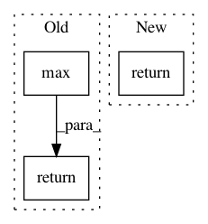

fcb01e3b18c0b3304c4ff0b1f0b8b4ede518f762,ludwig/features/numerical_feature.py,NumericalFeatureMixin,get_feature_meta,#Any#Any#Any#,58
Before Change
"std": compute(column.astype(np.float32).std())
}
elif preprocessing_parameters["normalization"] == "minmax":
return {
"min": compute(column.astype(np.float32).min()),
"max": compute(column.astype(np.float32).max())
}
else:
logger.info(
"Currently zscore and minmax are the only "
"normalization strategies available. No {}".format(
After Change
numeric_transformation_registry
)
return numeric_transformer.fit_transform_params(column, backend)
@staticmethod
def add_feature_data(
feature,
In pattern: SUPERPATTERN
Frequency: 4
Non-data size: 3
Instances
Project Name: uber/ludwig
Commit Name: fcb01e3b18c0b3304c4ff0b1f0b8b4ede518f762
Time: 2020-12-03
Author: jimthompson5802@gmail.com
File Name: ludwig/features/numerical_feature.py
Class Name: NumericalFeatureMixin
Method Name: get_feature_meta
Project Name: keras-team/autokeras
Commit Name: 90663a73d3c1276ccbb60a6552c2e4a1ecd0d908
Time: 2018-04-01
Author: jin@tamu.edu
File Name: autokeras/search.py
Class Name: Searcher
Method Name: load_best_model
Project Name: NervanaSystems/coach
Commit Name: 6c79a442f2fdf6b88002510fc4ed60265ba7f6c9
Time: 2018-01-05
Author: zach.dwiel@intel.com
File Name: utils.py
Class Name: Signal
Method Name: get_max
Project Name: maciejkula/spotlight
Commit Name: 70e4d7fe60a9658bb27b9f5fb67592a1222b2ec3
Time: 2017-07-06
Author: maciej.kula@gmail.com
File Name: spotlight/sequence/representations.py
Class Name: CNNNet
Method Name: user_representation